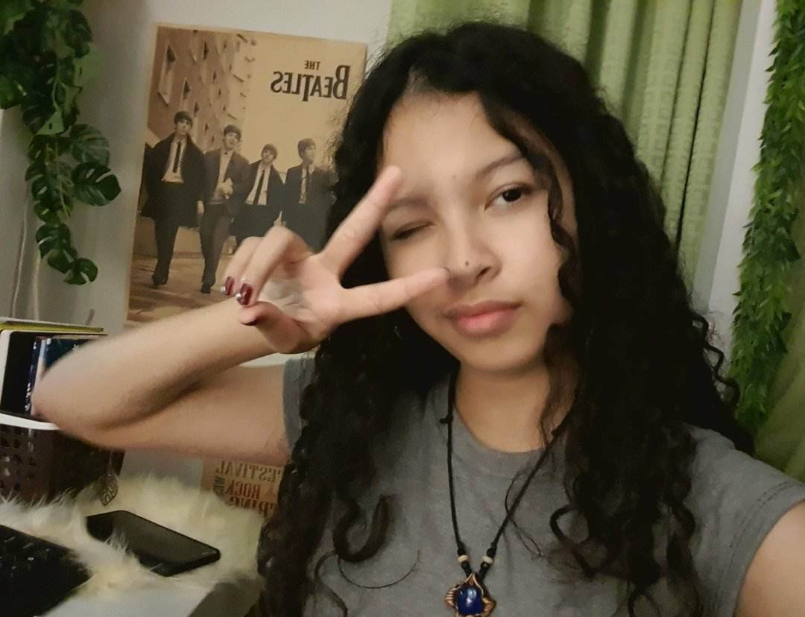
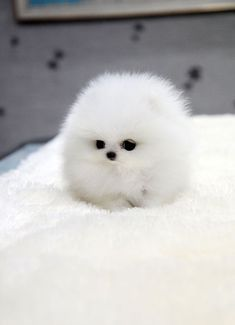

SAKADAB
Background

Project Background
We decided to start with a fundraiser program since this project is what will help address SAKADAB's biggest problem. We see to it that SAKADAB's financial instability would be what we could attempt to help with, and possibly be the most effective. In doing so SAKADAB will be able to fix their current financial issues, but also financial issues that are bound to happen.
Project Significance
This project proposal will address the institution SAKADAB’s financial challenges by providing them with enough money that we have raised from the program for SAKADAB to provide themselves with their needed resources. As a fundraiser project, If we were able to gather even more than the target amount of funds, these funds can go towards helping and improving the institution (SAKADAB).
Problem
Throughout the process of gathering information about our partner institution, we learned that the community is also experiencing financial instability, which causes them to lack some supplies they require for their daily needs and all of their necessities. Few people are aware of the people who work hard to create their products, making it difficult for them to achieve their goal of self-sufficiency. Because of their lack of recognition, they often have no clients to assist them, and they are in need of financial assistance.
Proposed Intervention
We are proposing a donation program where we will be able to gather funds to collect and use those to help the institution. This program can help with the institution's financial status and can spread awareness about the needs and goals of this institution. Our team will work together and put our skills to use so that we can advertise our program while also advertising the institution. If more people know about the needs of our partner institution, they may be willing to help and support the institution through the donation program where we collect funds to financially help the community. If this program becomes successful in helping the institution’s financial problem, the community members will be able to easily buy their basic and medical needs without struggle.

Webdesigner
Her name is Mary Kristel Torre(a.k.a Kristel) and she is 14 years old. I am a quiet introverted person who enjoys spennding timenalone but Im also comfortable coversing with people who open up to meny. Im not hard to please though, a simple thing can make me happy. I have many hobbies but I mostly like to read draw and listen to music. My friends and family describe me as sensitive compassionate insightful and caring.

Webdesigner
His name is Alekxis Jan Gabriel O. Malubay(a.k.a. Gab Osorio) who is 14 years old and is the leader of Group 4B of 9-Pignatelli. He is a member of the Ateneo Society of Computer Enthusiasts(ASCE) club because it piqued his interest in learning more about coding. His hobbies consist of reading books, gaming, biking, and playing board games. His favorite color is white because it reminds him of peace and that's how he wants his life to be. He is also very energetic and friendly toward other people but becomes really shy with the people he doesn't know.
